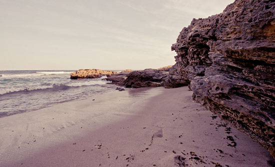

Company Information
On the Mornington Peninsula (one hour from Melbourne) next door to Portsea.
The apartments are an easy 10 minute walk from the pisturesque township of Sorrento that offers convenient handy shops and lots more. It is located in a quiet avenue, just 4 houses from the beach. It is in easy walking distance of the ocean beaches and surf. Your private luxury apartment consists of a spacious living area with leather lounge suite overlooking a sunny well established garden, tree-filled private garden.
A separate kitchenette has everything you need to make your stay relaxed and comfortable. A queen sized bedroom and an amazing bathroom complete with free standing black bath entices you to relax and unwind. Two TVs are sure to make everyone happy! An undercover BBQ area with seating offers plenty of space to stretch out and enjoy that cup of freshly brewed coffee or a glass of wine. This is the perfect place to escape to your home away from home